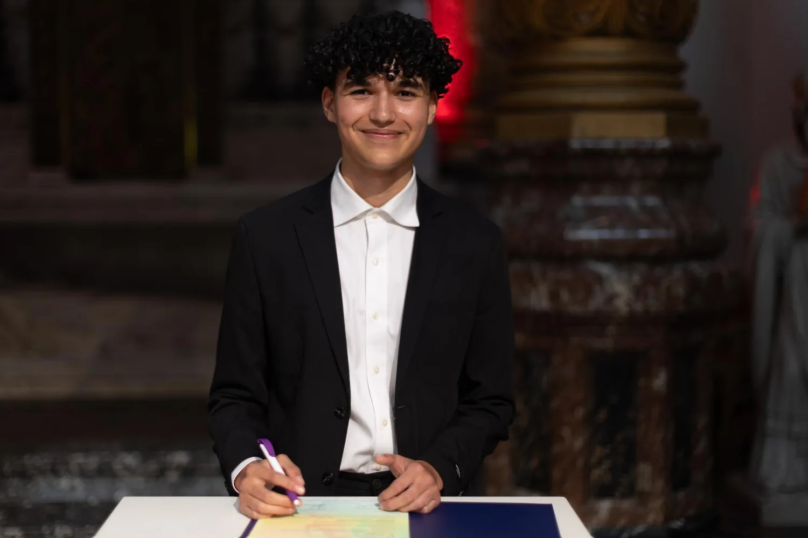
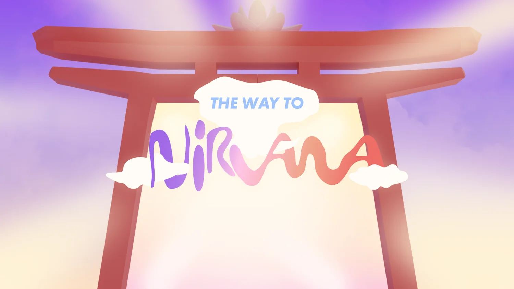

VR
VRVR-boogschieten
Bow & Arrow Trials
Een VR-boogschietgame waarin je drie verschillende levels speelt. Je schiet op doelen en probeert sneller te zijn dan je tegenstander, die ook met een boog schiet.
Game developer
Ik bouw games in Unity en C#. Mijn doel is een eigen horrorstudio voor PlayStation, pc en VR.

Projectarchief
VRVR-boogschieten
Een VR-boogschietgame waarin je drie verschillende levels speelt. Je schiet op doelen en probeert sneller te zijn dan je tegenstander, die ook met een boog schiet.
 PC
PC2D-platformer
Een 2D-platformgame waarin je door verschillende werelden speelt. Onderweg ontwijk je vijanden en obstakels en verzamel je coins.

GAMEJAMVerhalend avontuur
Een korte game over het loslaten van gedachten. Tijdens het spelen laat je gedachten verdwijnen met een timersysteem, terwijl de geluiden veranderen.
Over mij
Ik studeer Game Development in Amsterdam. Tussen mijn eerste Unity-project en een eigen studio liggen de stappen die ik wil zetten.
Bekijk mijn stappenplan